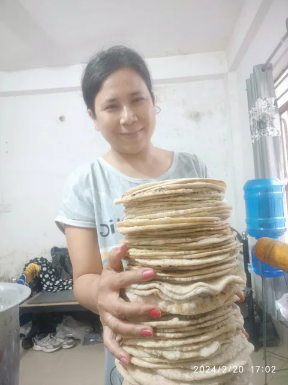
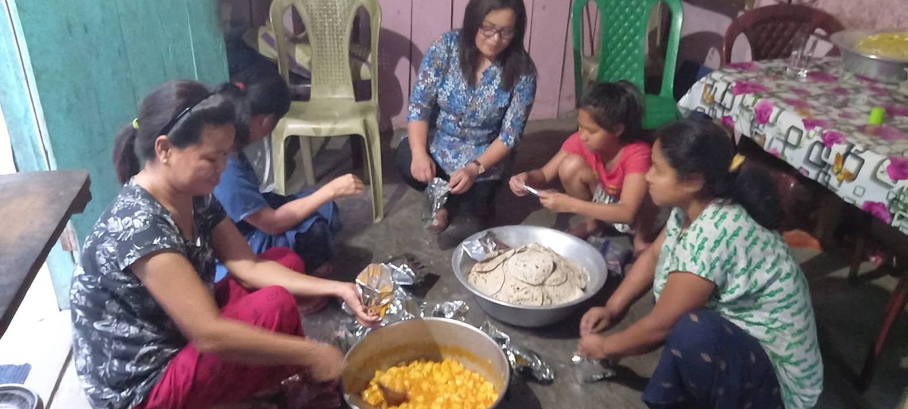
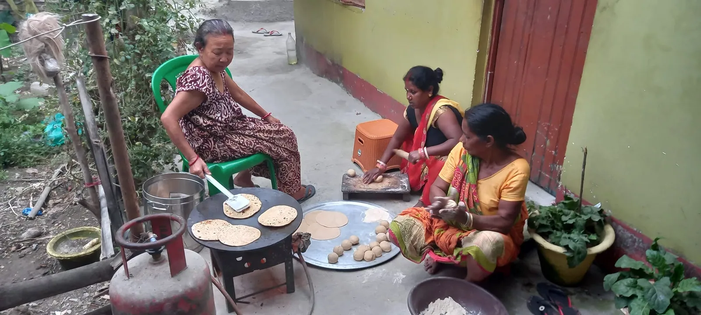
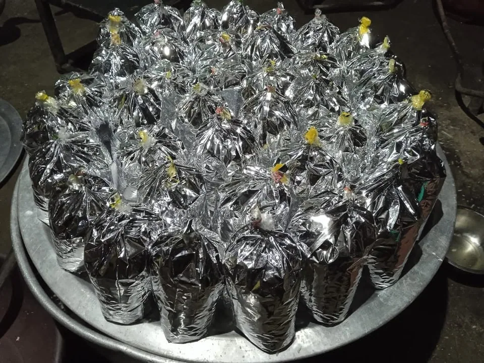
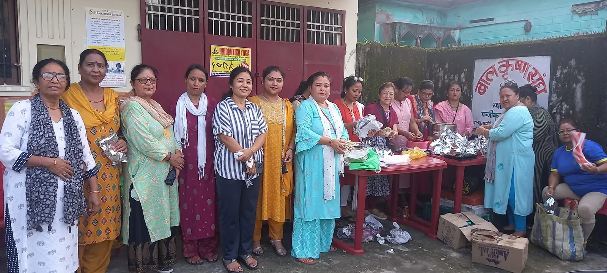
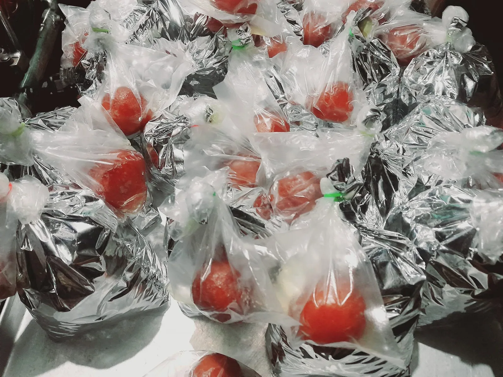
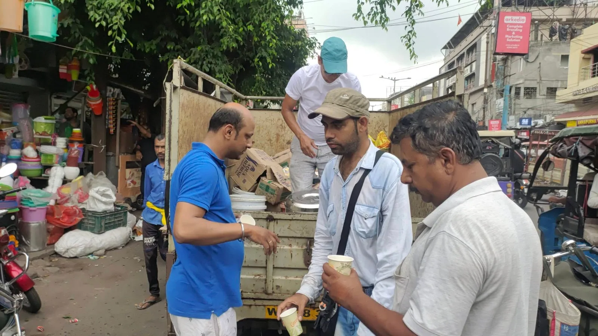
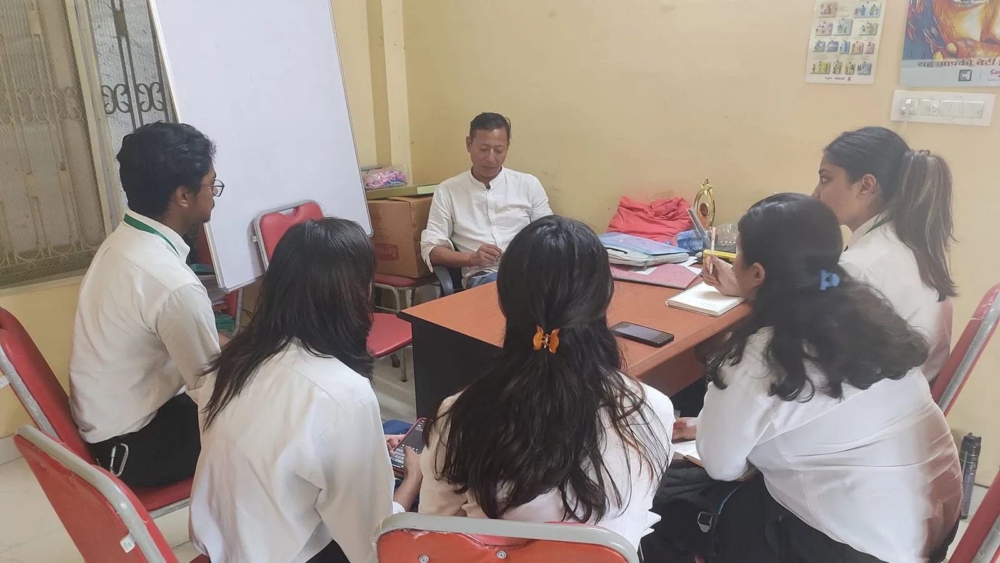
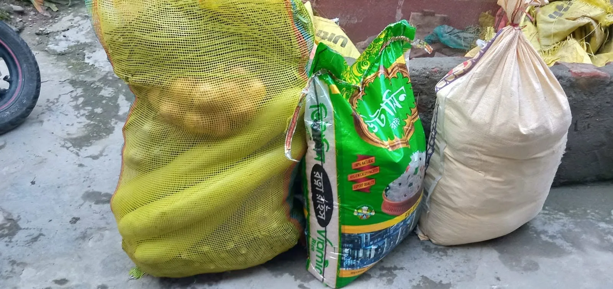

OUR COMMUNITY STORY
From Bharosa to Aashray
How a lockdown food response became a wider community mission.
Read the storyPhotograph from the wider organisation collection, not a dated record of 2020.
SILIGURI AASHRAY WELFARE FOUNDATION
Born from a simple act of community care during the 2020 lockdown, Siliguri Aashray Welfare Foundation brings people together to support relief, wellbeing, education and opportunities for a better future.


From the wider organisation photo collection.
OUR STORY BEGAN IN 2020
It started with a few friends, a few rotis, and faith in people.
What began as Bharosa Group grew through the Roti Challenge: families and volunteers sharing responsibility for a meal.
OUR SIX IMPACT AREAS
Immediate care and longer-term opportunity belong together. Aashray’s work and future plans are organised around six areas, each with a clear stage of progress.
Practical digital skills and opportunities to learn.
Discover this area02Work undertakenBuilding on health-related community work.
Discover this area03Planned initiativeFuture pathways for skills and livelihood.
Discover this area04Work undertakenFood and clothing support, rooted in community.
Discover this area05Planned initiativePlanned care for our shared surroundings.
Discover this area06Planned initiativeDignity, inclusion and community awareness.
Discover this areaOUR WORK AND NEXT STEPS
Food distribution, clothing distribution and health-related work form part of our journey.
Computer training is an upcoming program. Women & Livelihood, Environment & Animal Welfare, and Human Rights are planned initiatives.


THE ROTI CHALLENGE
Legacy initiativeWhen a community turned its kitchens into a movement.
A weekly contribution from home became a collective act of care. Families prepared rotis, and the team brought the meals together for distribution.
HOW THE ROTI CHALLENGE WORKED
Participating families contribute rotis once a week.
Families prepare their contribution in their own kitchens.
Volunteers collect the rotis from participating homes.
Food is packed at the team’s work location.
The team goes out to distribute the meals.
THE IMPACT ARCHIVE
Our impact archive is being documented. Explore the beginnings of Aashray and the community participation behind our work. Activity records, photographs and verified figures will help tell that story as the archive grows.
Explore all 80 photographs


GET INVOLVED
Volunteer with us, share your expertise, discuss a partnership or express interest in supporting our work. We will help you explore the opportunities available.


WORKING TOGETHER
Community work grows when people bring different strengths. We welcome conversations with local businesses, educators, health professionals, institutions and community groups about practical ways to collaborate.
TRANSPARENCY AND TRUST
Learn about our organisation, program stages and the documents that support our work. We will share verified information as it becomes ready for publication.
BE PART OF WHAT COMES NEXT
Aashray began with people choosing to help. Join us as we build on that beginning and work towards becoming a trusted community organisation across North Bengal.